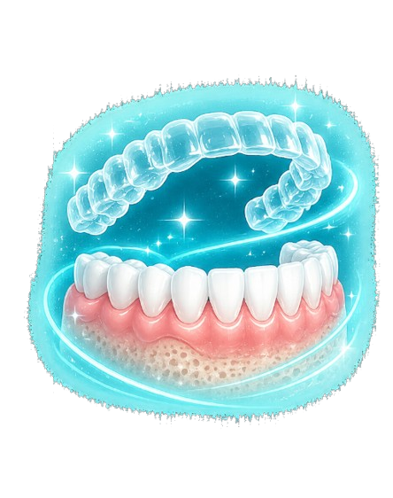
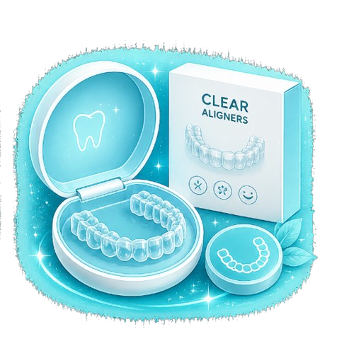

Straighten your teeth discreetly with advanced clear aligners designed for comfort, precision, and beautifully confident smiles.

Clear Aligners are a modern orthodontic solution that gradually straighten teeth using transparent, removable trays custom-designed for your smile.
At Serenity Dental, we combine digital smile planning with advanced aligner technology to create seamless, comfortable, and nearly invisible orthodontic treatments tailored to your lifestyle.
Every aligner journey begins with a digital scan and detailed smile analysis. Your aligners are then custom-fabricated to gently guide your teeth into ideal alignment.
Clear aligners can help treat:

Transparent trays designed for discreet treatment.
Smooth aligners with no metal wires or brackets.
Eat, brush, and floss without restrictions.
AI-assisted planning for predictable smile outcomes.
Common questions about clear aligners and invisible braces.
Clear aligners are more discreet and comfortable for many patients, while still effectively correcting a wide range of alignment concerns.
Treatment duration varies depending on complexity, but most cases range from 6 to 18 months.
Yes. Aligners are removable, allowing you to comfortably eat and maintain oral hygiene.
Mild pressure is normal during aligner changes, but treatment is generally far more comfortable than traditional braces.